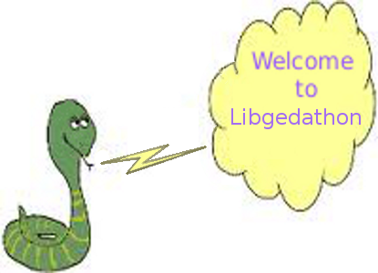

<body>
  What is Libgedathon?
  <p/>
  Libgedathon is a extension library for LibgEDA that provides an intermediate API for
  Python. Libgedathon is not accessed directly. A seperate geda python extension module
  provides an interface to Libgedathon. The geda module provides a multi-level API as
  well as defining constants for use by Python programs. The API presented by Libgedathon
  allows creation and manipulation of gEDA objects for schematic and symbol files. The
  library does not manipulate data directly, per se, nor does the library perform any
  input or output operations. Libgedathon calls LibgEDA functions to perform operations
  on the data. Libgedathon does not currently provide any rendering capabilities or any
  API's for Libgedacairo.
</body>
